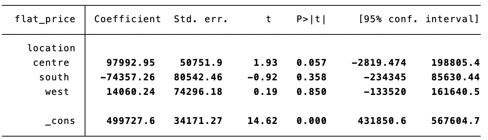
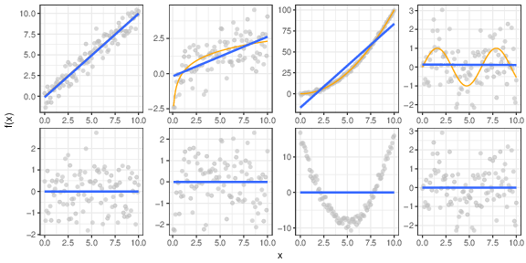
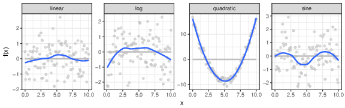
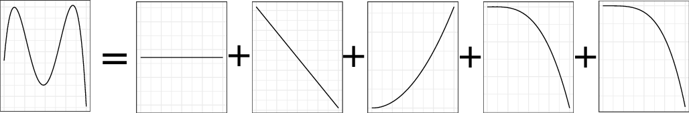
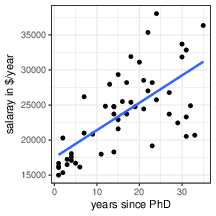
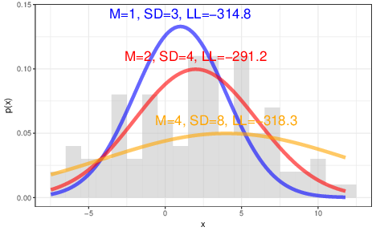
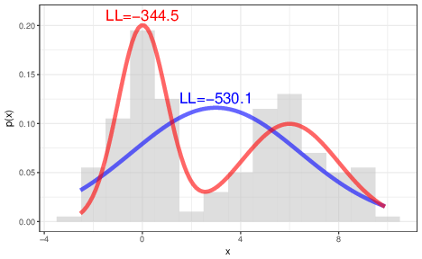

Dummy-variables, Interactions and Nonlinear-regression
PSY-8003: Multivariate kvantitative forskningsmetoder
Matthias Mittner
Institute for Psychology
v2022
Dummy-variable regression
- regression requires continuous variables
- categorical variables need to be converted into multiple “dummy”-variables
- Dummy-variable: only values 0 or 1 allowed
- dummy=0: case/subject not in category
- dummy=1: case/subject in category
- name of dummy: category name!
- “female” (0-no, 1-yes)
- “brown_eyes” (0-no, 1-yes)
- …
Dummy-variables
Example
| happy (\(Y\)) | group (\(X\)) | Dummy 1 (young) | Dummy 2 (mid) | Dummy 3 (old) |
|---|---|---|---|---|
| 80 | young | 1 | 0 | 0 |
| 76 | young | 1 | 0 | 0 |
| 53 | mid | 0 | 1 | 0 |
| 45 | mid | 0 | 1 | 0 |
| 77 | old | 0 | 0 | 1 |
| 90 | old | 0 | 0 | 1 |
| … | … | … | … |
- Not possible: \(Y = \beta_0 +\beta_1 X + \epsilon\) (because \(X\) is factor)
- Therefore: \(Y=\beta_0 + \beta_1 \text{young} + \beta_2 \text{mid} + \beta_3 \text{old}\) (these are numeric!)
- BUT: \(\text{young} = 1-\text{mid}-\text{old}\) (collinearity!)
- have to leave out one dummy (baseline category)
Example: Housing prices in Trondheim
flats.dta
- each location gets its own “dummy” variable
- any one can serve as baseline category (e.g., “centre”)
- construct regression model:
\[\operatorname{flat\_price} = \beta_0 + \beta_{1}(\operatorname{location}_{\operatorname{south}}) + \beta_{2}(\operatorname{location}_{\operatorname{west}}) + \beta_{3}(\operatorname{location}_{\operatorname{east}}) + \epsilon \]
- slope \(\beta\): change in \(Y\) for unit change in \(X\)
- since \(X\) is a dummy: \(\beta\) = mean change from baseline-category!
Dummy regression
Geometric interpretation
\[\begin{align*} \operatorname{price} =& \beta_0 + \beta_{1}(\operatorname{centre}) + \epsilon\\ \operatorname{\widehat{price}} =& 3038.43 + 466.37(\operatorname{centre}) \end{align*}\]
- intercept: price of non-centre flats
- slope: difference between centre and non-centre flats
Interpretation of dummy coefficients
- intercept \(\beta_0\): price of non-centre flats
- slope \(\beta_1\): difference between centre and non-centre flats \[\begin{align*} \operatorname{price} =& \beta_0 + \beta_{1}(\operatorname{centre}) + \epsilon\\ \operatorname{\widehat{price}} =& 3038.43 + 466.37(\operatorname{centre}) \end{align*}\]
- if \(centre=0\):
- \(\operatorname{\widehat{price}} = \beta_0 + \beta_{1}(0) = \beta_0\)
- \(\operatorname{\widehat{price}} = 3038.43 + 0\times 466.37 = 3038.43\) tNOK
- if \(centre=1\):
- \(\operatorname{\widehat{price}} = \beta_0 + \beta_{1}(1) = \beta_0+\beta_1\)
- \(\operatorname{\widehat{price}} = 3038.43 + 1\times 466.37 = 3504.80\) tNOK
Multiple dummies
\[\begin{align*} \operatorname{price} =& \beta_0 &+& \beta_{1}(\operatorname{centre}) &+& \beta_{2}(\operatorname{east}) &+& \beta_{3}(\operatorname{west}) &+& \epsilon\\ \operatorname{\widehat{price}} =& 2627.14 &+& 877.66(\operatorname{centre}) &+& 456.39(\operatorname{east}) &+& 554.86(\operatorname{west}) \end{align*}\]
- intercept \(\beta_0\): price of flats in
south - slope \(\beta_1\): difference price of flats in
centrevs.south - slope \(\beta_2\): difference price of flats in
eastvs.south - slope \(\beta_3\): difference price of flats in
westvs.south
Multiple dummies
from the same polytomous variable
\[\begin{align*} \operatorname{price} =& \beta_0 &+& \beta_{1}(\operatorname{centre}) &+& \beta_{2}(\operatorname{east}) &+& \beta_{3}(\operatorname{west}) &+& \epsilon\\ location=\color{purple}{south}\\ \operatorname{price} =& \color{purple}{\beta_0} &+& \color{black}{\beta_{1}}(\operatorname{0}) &+& \beta_{2}(\operatorname{0}) &+& \beta_{3}(\operatorname{0})\\ =& \color{purple}{\beta_0}\\ location=\color{orange}{centre}\\ \operatorname{price} =& \beta_0 &+& \color{orange}{\beta_{1}}(\operatorname{1}) &+& \beta_{2}(\operatorname{0}) &+& \beta_{3}(\operatorname{0})\\ =& \beta_0 &+& \color{orange}{\beta_{1}}\\ location=\color{blue}{east}\\ \operatorname{price} =& \beta_0 &+& \beta_{1}(\operatorname{0}) &+& \color{blue}{\beta_{2}}(\operatorname{1}) &+& \beta_{3}(\operatorname{0})\\ =& \beta_0 && &+& \color{blue}{\beta_{2}}\\ location=\color{green}{west}\\ \operatorname{price} =& \beta_0 &+& \beta_{1}(\operatorname{0}) &+& \beta_{2}(\operatorname{0}) &+& \color{green}{\beta_{3}}(\operatorname{1})\\ =& \beta_0 && && &+& \color{green}{\beta_{3}}\\ \end{align*}\]
Dummy-regression: Significance tests
Standard hypothesis test for slope-coefficients:
- \(H_0: \beta=0\)
- \(H_1: \beta\ne 0\)
for a dummy predictor:
- \(\beta = \bar{Y}_{X=1} - \bar{Y}_{X=0} = M_1 - M_2\)
- corresponds to a t-test!
Multiple dummies: Significance test
\[\begin{align*} \operatorname{price} =& \beta_0 &+& \beta_{1}(\operatorname{centre}) &+& \beta_{2}(\operatorname{east}) &+& \beta_{3}(\operatorname{west}) &+& \epsilon\\ \operatorname{\widehat{price}} =& 2627.14 &+& 877.66(\operatorname{centre}) &+& 456.39(\operatorname{east}) &+& 554.86(\operatorname{west}) \end{align*}\]
Omnibus \(F\)-test for regression model:
- does any of the predictors (or combination) explain variance above chance level?
for dummy-predictors:
- do the different groups of flats explain variance in the data?
- corresponds to a one-way ANOVA!
Changing baseline category
\[\begin{align*} \operatorname{price} =& \beta_0 &+& \color{orange}{\beta_{1}(\operatorname{east})} &+& \color{orange}{\beta_{2}(\operatorname{west})} &+& \color{orange}{\beta_{3}(\operatorname{south})} &+& \epsilon\\ \operatorname{price} =& \beta_0 &+& \beta_{1}(\operatorname{centre}) &+& \color{blue}{\beta_{2}(\operatorname{west})} &+&\color{blue}{ \beta_{3}(\operatorname{south})} &+& \epsilon\\ \operatorname{price} =& \beta_0 &+& \beta_{1}(\operatorname{centre}) &+& \beta_{2}(\operatorname{east}) &+& \color{green}{\beta_{3}(\operatorname{south})} &+& \epsilon\\ \end{align*}\]
- regression coefficients: \(t\)-tests against baseline category
- change baseline category to get remaining tests!
Changing baseline category
baseline=“centre”
baseline=“east”

baseline=“west”
Testing linear combinations of coefficients
\[\begin{align*} \operatorname{price} =& \beta_0 &+& \color{orange}{\beta_{1}(\operatorname{east})} &+& \color{orange}{\beta_{2}(\operatorname{west})} &+& \color{orange}{\beta_{3}(\operatorname{south})} &+& \epsilon \end{align*}\]
- estimate just one of the models
- run t-tests for linear combinations of coefficients
eastvs.west: \(\color{blue}{\Delta_1 = \beta_1-\beta_2}\)eastvs.south: \(\color{blue}{\Delta_2 = \beta_1-\beta_3}\)westvs.south: \(\color{green}{\Delta_3 = \beta_1-\beta_3}\)
Testing linear combinations of coefficients
\(t\)-test for differences of regression coefficients:
- \(t_\Delta = \frac{\beta_j-\beta_k}{\sigma_{\beta_j-\beta_k}}\)
- \(\sigma_{\beta_j-\beta_k}=\sqrt{\sigma^2_{\beta_j}+\sigma^2_{\beta_k}-2cov}\left(\beta_j,\beta_k\right)\)
Testing linear combinations of coefficients
in Stata:
. lincom _b[3.location]- _b[2.location]. lincom _b[4.location]- _b[2.location]. lincom _b[4.location]- _b[3.location]
Dummy regression with several categorical variables
different sets of dummy-variables \[\begin{align*} \operatorname{price} &= \beta_0 &+& \color{red}{\beta_{1}(\operatorname{location}_{\operatorname{south}}) + \beta_{2}(\operatorname{location}_{\operatorname{west}}) + \beta_{3}(\operatorname{location}_{\operatorname{east}})}\\ & &+& \color{blue}{\beta_{4}(\operatorname{efficiency}_{\operatorname{best}}) + \beta_{5}(\operatorname{efficiency}_{\operatorname{medium}})} + \epsilon \end{align*}\]
- Example: price of flat as function of energy efficiency (poor, medium, good) and location (centre, south, west, east)
- corresponds to two-way ANOVA (4 x 3)
- a baseline is selected for each variable:
centreforlocationpoorforenergy_efficiency
- intercept: corresponds to average DV in baseline categories (average price of centre-flats with poor energy-efficiency)
- slopes: average differences from that category
Dummy regression with several categorical variables
\[\begin{align*} \operatorname{price} &= \beta_0 &+& \color{red}{\beta_{1}(\operatorname{location}_{\operatorname{south}}) + \beta_{2}(\operatorname{location}_{\operatorname{west}}) + \beta_{3}(\operatorname{location}_{\operatorname{east}})}\\ & &+& \color{blue}{\beta_{4}(\operatorname{efficiency}_{\operatorname{best}}) + \beta_{5}(\operatorname{efficiency}_{\operatorname{medium}})} + \epsilon \end{align*}\]
\[\begin{align*} \operatorname{price} &= \beta_0 +\color{red}{\beta_{1}(0) + \beta_{2}(0) + \beta_{3}(0)}+ \color{blue}{\beta_{4}(0) + \beta_{5}(0)}\\ &= \beta_0 \end{align*}\]
\[\begin{align*} \operatorname{price} &= \beta_0 +\color{red}{\beta_{1}(1) + \beta_{2}(0) + \beta_{3}(0)}+ \color{blue}{\beta_{4}(0) + \beta_{5}(0)}\\ &= \beta_0 + \color{red}{\beta_{1}} \end{align*}\]
\[\begin{align*} \operatorname{price} &= \beta_0 +\color{red}{\beta_{1}(0) + \beta_{2}(1) + \beta_{3}(0)}+ \color{blue}{\beta_{4}(0) + \beta_{5}(0)}\\ &= \beta_0 + \color{red}{\beta_{2}} \end{align*}\]
\[\begin{align*} \operatorname{price} &= \beta_0 +\color{red}{\beta_{1}(0) + \beta_{2}(0) + \beta_{3}(1)}+ \color{blue}{\beta_{4}(0) + \beta_{5}(0)}\\ &= \beta_0 + \color{red}{\beta_{3}} \end{align*}\]
Dummy regression with several categorical variables
\[\begin{align*} \operatorname{price} &= \beta_0 &+& \color{red}{\beta_{1}(\operatorname{location}_{\operatorname{south}}) + \beta_{2}(\operatorname{location}_{\operatorname{west}}) + \beta_{3}(\operatorname{location}_{\operatorname{east}})}\\ & &+& \color{blue}{\beta_{4}(\operatorname{efficiency}_{\operatorname{best}}) + \beta_{5}(\operatorname{efficiency}_{\operatorname{medium}})} + \epsilon \end{align*}\]
\[\begin{align*} \operatorname{price} &= \beta_0 +\color{red}{\beta_{1}(0) + \beta_{2}(0) + \beta_{3}(0)}+ \color{blue}{\beta_{4}(1) + \beta_{5}(0)}\\ &= \beta_0 + \color{blue}{\beta_{4}} \end{align*}\]
\[\begin{align*} \operatorname{price} &= \beta_0 +\color{red}{\beta_{1}(1) + \beta_{2}(0) + \beta_{3}(0)}+ \color{blue}{\beta_{4}(1) + \beta_{5}(0)}\\ &= \beta_0 + \color{red}{\beta_{1}} + \color{blue}{\beta_{4}} \end{align*}\]
\[\begin{align*} \operatorname{price} &= \beta_0 +\color{red}{\beta_{1}(0) + \beta_{2}(1) + \beta_{3}(0)}+ \color{blue}{\beta_{4}(1) + \beta_{5}(0)}\\ &= \beta_0 + \color{red}{\beta_{2}} + \color{blue}{\beta_{4}} \end{align*}\]
\[\begin{align*} \operatorname{price} &= \beta_0 +\color{red}{\beta_{1}(0) + \beta_{2}(0) + \beta_{3}(1)}+ \color{blue}{\beta_{4}(1) + \beta_{5}(0)}\\ &= \beta_0 + \color{red}{\beta_{3}}+ \color{blue}{\beta_{4}} \end{align*}\]
Dummy regression with several categorical variables
\[\begin{align*} \operatorname{price} &= \beta_0 &+& \color{red}{\beta_{1}(\operatorname{location}_{\operatorname{south}}) + \beta_{2}(\operatorname{location}_{\operatorname{west}}) + \beta_{3}(\operatorname{location}_{\operatorname{east}})}\\ & &+& \color{blue}{\beta_{4}(\operatorname{efficiency}_{\operatorname{best}}) + \beta_{5}(\operatorname{efficiency}_{\operatorname{medium}})} + \epsilon \end{align*}\]
\[\begin{align*} \operatorname{price} &= \beta_0 +\color{red}{\beta_{1}(0) + \beta_{2}(0) + \beta_{3}(0)}+ \color{blue}{\beta_{4}(0) + \beta_{5}(1)}\\ &= \beta_0 + \color{blue}{\beta_{5}} \end{align*}\]
\[\begin{align*} \operatorname{price} &= \beta_0 +\color{red}{\beta_{1}(1) + \beta_{2}(0) + \beta_{3}(0)}+ \color{blue}{\beta_{4}(0) + \beta_{5}(1)}\\ &= \beta_0 + \color{red}{\beta_{1}} + \color{blue}{\beta_{5}} \end{align*}\]
\[\begin{align*} \operatorname{price} &= \beta_0 +\color{red}{\beta_{1}(0) + \beta_{2}(1) + \beta_{3}(0)}+ \color{blue}{\beta_{4}(0) + \beta_{5}(1)}\\ &= \beta_0 + \color{red}{\beta_{2}} + \color{blue}{\beta_{5}} \end{align*}\]
\[\begin{align*} \operatorname{price} &= \beta_0 +\color{red}{\beta_{1}(0) + \beta_{2}(0) + \beta_{3}(1)}+ \color{blue}{\beta_{4}(0) + \beta_{5}(1)}\\ &= \beta_0 + \color{red}{\beta_{3}}+ \color{blue}{\beta_{5}} \end{align*}\]
Dummy regression with several categorical variables
Significance tests \[\begin{align*} \operatorname{price} &= \beta_0 &+& \color{red}{\beta_{1}(\operatorname{location}_{\operatorname{south}}) + \beta_{2}(\operatorname{location}_{\operatorname{west}}) + \beta_{3}(\operatorname{location}_{\operatorname{east}})}\\ & &+& \color{blue}{\beta_{4}(\operatorname{efficiency}_{\operatorname{best}}) + \beta_{5}(\operatorname{efficiency}_{\operatorname{medium}})} + \epsilon \end{align*}\]
- significance test of slopes=contrast against baseline
- significance testing of linear combinations as before
- note: differences independent of other categorical variable (additivity)
- when including interactions, these differences can change!
- what about the significance of each of the original categorical variables?
- does
locationinfluence the price? - does
energy efficiencyinfluence the price?
- does
Dummy regression with several categorical variables
Significance tests \[\begin{align*} \operatorname{price} &= \beta_0 &+& \color{red}{\beta_{1}(\operatorname{location}_{\operatorname{south}}) + \beta_{2}(\operatorname{location}_{\operatorname{west}}) + \beta_{3}(\operatorname{location}_{\operatorname{east}})}\\ & &+& \color{blue}{\beta_{4}(\operatorname{efficiency}_{\operatorname{best}}) + \beta_{5}(\operatorname{efficiency}_{\operatorname{medium}})} + \epsilon \end{align*}\]
- does influence the price?
- \(H_0: \beta_1=\beta_2=\beta_3=0\)
- does influence the price?
- \(H_0: \beta_4=\beta_5=0\)
- \(F\)-test comparing “reduced model” against “full model”
- reduced model leaves out one of the categorical variables
- is change in \(R^2\) signficant? same \(F\) test as in hierarchical regression
Mixing dummies and continuous variables
\[\begin{align*} \operatorname{price} &= \beta_0 &+& \beta_{1}&(\operatorname{centre}) &+& \beta_{2}&(\operatorname{floor\_size}) &+& \epsilon\\ \operatorname{\widehat{price}} &= 932.84 &+& 303.59&(\operatorname{centre}) &+& 27.99&(\operatorname{floor\_size}) \end{align*}\]
- controlling for size of house
- dummy slope is average distance between “matched” houses
- difference between two groups “controlled for” continuous variable (ANCOVA)
Mixing dummies and continuous variables
Multiple dummies + covariate(s)
\[\begin{align*} \operatorname{price} &= \beta_0 &+& \color{red}{\beta_{1}(\operatorname{efficiency}_{\operatorname{best}}) + \beta_{2}(\operatorname{efficiency}_{\operatorname{medium}})}\\ & &+& \color{green}{\beta_{3}(\operatorname{floor\_size})} \end{align*}\]
\[\begin{align*} \operatorname{price} &= \beta_0 + \color{red}{\beta_{1}(0) + \beta_{2}(0)}+ \color{green}{\beta_{3}(\operatorname{floor\_size})}\\ &= \beta_0 + \color{green}{\beta_{3}(\operatorname{floor\_size})} \end{align*}\]
\[\begin{align*} \operatorname{price} &= \beta_0 + \color{red}{\beta_{1}(0) + \beta_{2}(1)}+ \color{green}{\beta_{3}(\operatorname{floor\_size})}\\ &= (\beta_0 + \color{red}{\beta_{2}}) + \color{green}{\beta_{3}(\operatorname{floor\_size})} \end{align*}\]
\[\begin{align*} \operatorname{price} &= \beta_0 + \color{red}{\beta_{1}(1) + \beta_{2}(0)}+ \color{green}{\beta_{3}(\operatorname{floor\_size})}\\ &= (\beta_0 + \color{red}{\beta_{1}}) + \color{green}{\beta_{3}(\operatorname{floor\_size})} \end{align*}\]
Multiple dummies + covariate(s)
\[\begin{align*} \operatorname{price} &= \beta_0 &+& \color{red}{\beta_{1}(\operatorname{efficiency}_{\operatorname{best}}) + \beta_{2}(\operatorname{efficiency}_{\operatorname{medium}})}\\ & &+& \color{green}{\beta_{3}(\operatorname{floor\_size})} \end{align*}\]
- each category represented by a dummy has its “own” linear regression (with
floor_size) - the dummy-coefficients are the intercepts for each group of flats
- same significance tests as before can be applied
Extensions
same logic applies when adding several categorical predictors (sets of dummy-variables)
or several continous covariates
or a combination of the two
intercept: average DV for baseline-category(-ies) where all covariates=0
dummy-slopes: average increase compared to baseline (controlled for variables)
continuous slopes: average by-unit increase controlled for variables
Interaction effects in linear regression
The combined effect of two variables on another is known conceptually as moderation, and in statistical terms as an interaction effect.
- “effect on an effect”
Product-term approach
- “linearizing” the effects
Product-term approach
- include product of two predictor variables as new predictor
- \(X_3 = X_1\times X_2\)
- for dummy \(\times\) continuous: “extra slope” for category
Product-term approach
- include product of two predictor variables as new predictor
- \(X_3 = X_1\times X_2\)
- for continuous \(\times\) continuous: increase of slope by unit increase of predictor
Interaction effects in linear regression
The “General Social Survey” (GSS), 2018
\[\begin{align*} \operatorname{income} &=& \beta_0 &+& \beta_{1}(\operatorname{age}) &+& \beta_{2}(\operatorname{female}) &+& \beta_{3}(\operatorname{childs}) &+& \epsilon \\ \operatorname{\widehat{income}} &=& 14.65 &+& 0.35(\operatorname{age}) &-& 10.17(\operatorname{female}) &+& 0.07(\operatorname{childs}) \end{align*}\]
Interaction effects in linear regression
The “General Social Survey” (GSS), 2018
\[\begin{align*} \operatorname{income} &=& \beta_0 &+& \beta_{1}(\operatorname{age}) &+&\beta_{2}(\operatorname{female}) &+& \beta_{3}(\operatorname{childs}) &+& \beta_{4}(\operatorname{female} \times \operatorname{childs}) &+& \epsilon\\ \operatorname{\widehat{income}} &=& 12.17 &+& 0.35(\operatorname{age}) &-& 4.41(\operatorname{female}) &+& 1.66(\operatorname{childs}) &-& 3.37(\operatorname{female} \times \operatorname{childs}) \end{align*}\]
- interaction term \(\operatorname{female} \times \operatorname{childs}\): “extra slope” for females
- also known as product-term
Interaction: Product term
Dummy variable and continuous variable
\[\begin{align*} \operatorname{income} = \beta_0 + \beta_{1}(\operatorname{age}) +\beta_{2}(\operatorname{female}) + \beta_{3}(\operatorname{childs}) + \color{red}{ \beta_{4}(\operatorname{female} \times \operatorname{childs})} + \epsilon \end{align*}\]
for males:
female=0\[\begin{align*} \operatorname{income} = \beta_0 &+ \beta_{1}(\operatorname{age}) &+\color{red}{\beta_{2}(\operatorname{0})} &+ \beta_{3}(\operatorname{childs}) + &\color{red}{\beta_{4}(\operatorname{0} \times \operatorname{childs}) } &+ \epsilon\\ \operatorname{income} = \beta_0 &+ \beta_{1}(\operatorname{age}) & &+ \beta_{3}(\operatorname{childs}) &&+ \epsilon\\ \end{align*}\]for females:
female=1\[\begin{align*} \operatorname{income} &= \beta_0 &+ \beta_{1}(\operatorname{age}) &+\color{red}{\beta_{2}(\operatorname{1})} &+& \beta_{3}(\operatorname{childs}) &+ \color{red}{\beta_{4}(\operatorname{1} \times \operatorname{childs})} &+ \epsilon\\ \operatorname{income} &= (\beta_0+\color{red}{\beta_2}) &+ \beta_{1}(\operatorname{age}) & &+& (\beta_{3}+\color{red}{\beta_4})(\operatorname{childs}) & &+ \epsilon\\ \end{align*}\]the IA term stands for an “effect on an effect” (effect of gender on the effect that number of children has on income)
Interaction: Product term
Two continuous variables
\[\begin{align*} \operatorname{income} &= \beta_0 &+ \beta_{1}(\operatorname{cage}) &+ \beta_{2}(\operatorname{cchilds}) &+ \epsilon\\ \operatorname{income} &= \beta_0 &+ \beta_{1}(\operatorname{cage}) &+ \beta_{2}(\operatorname{cchilds}) &+ \beta_{3}(\operatorname{cage} \times \operatorname{cchilds}) &+ \epsilon \end{align*}\] \[\begin{align*} \operatorname{\widehat{income}} &= 24.99 &+ 0.37(\operatorname{cage}) &- 0.09(\operatorname{cchilds})\\ \operatorname{\widehat{income}} &= 25.95 &+ 0.34(\operatorname{cage}) &+ 0.15(\operatorname{cchilds}) &- 0.12(\operatorname{cage} \times \operatorname{cchilds}) \end{align*}\]
Interaction: Product term
Two continuous variables: Effect on an effect
cchilds=1 \[\begin{align*} \operatorname{\widehat{income}} &= 25.95 &+& 0.34(\operatorname{cage}) &+&\color{green}{0.15}(\operatorname{cchilds}) &-& \color{red}{0.12}(\operatorname{cage} \times \operatorname{cchilds})\\ \operatorname{\widehat{income}} &= 25.95 &+& 0.34(\operatorname{cage}) &+& \color{green}{0.15}(\operatorname{1}) &-& \color{red}{0.12}(\operatorname{cage} \times \operatorname{1})\\ \operatorname{\widehat{income}} &= (25.95+\color{green}{0.15}) &+& (0.34\color{red}{-0.12})(\operatorname{cage}) & & & & \\ \end{align*}\]
- centering is very important for interpretability of non-IA slopes!
Interaction: Product term
Also the opposite!
cage=1 \[\begin{align*} \operatorname{\widehat{income}} &= 25.95 &+& \color{blue}{0.34}(\operatorname{cage}) &+&0.15(\operatorname{cchilds}) &-& \color{red}{0.12}(\operatorname{cage} \times \operatorname{cchilds})\\ \operatorname{\widehat{income}} &= 25.95 &+& \color{blue}{0.34}(\operatorname{1}) &+& 0.15(\operatorname{cchilds}) &-& \color{red}{0.12}(\operatorname{1} \times \operatorname{cchilds})\\ \operatorname{\widehat{income}} &= (25.95+\color{blue}{0.34}) &+& (0.15\color{red}{-0.12})(\operatorname{cchilds}) & & & & \\ \end{align*}\]
- centering is very important for interpretability of non-IA slopes!
Interaction: Product terms
Three-way interactions
\[\begin{align*} \operatorname{income} &= \beta_0 &+& \color{blue}{\beta_{1}(\operatorname{female})} &+& \color{blue}{\beta_{2}(\operatorname{cage})} &+& \color{blue}{\beta_{3}(\operatorname{cchilds})} \\ &&+& \color{orange}{\beta_{4}(\operatorname{female} \times \operatorname{cage})} &+& \color{orange}{\beta_{5}(\operatorname{female} \times \operatorname{cchilds})} &+& \color{orange}{\beta_{6}(\operatorname{cage} \times \operatorname{cchilds})}\\ &&+& \color{red}{\beta_{7}(\operatorname{female} \times \operatorname{cage} \times \operatorname{cchilds})} &+& \epsilon \\ \end{align*}\]
Interaction: Product terms
Three-way interactions
\[\begin{align*} \operatorname{\widehat{income}} &= 31.89 &-& \color{blue}{10.43(\operatorname{female})} &+& \color{blue}{0.3(\operatorname{cage})} &+& \color{blue}{2.32(\operatorname{cchilds})}\\ & &+& \color{orange}{0.01(\operatorname{female} \times \operatorname{cage})} &-& \color{orange}{4.17(\operatorname{female} \times \operatorname{cchilds})} &-& \color{orange}{0.15(\operatorname{cage} \times \operatorname{cchilds})}\\ & &-& \color{red}{0.03(\operatorname{female} \times \operatorname{cage} \times \operatorname{cchilds})} \end{align*}\]
Higher-order interactions
- including more interactions can make interpretation tricky!
- sometimes such interactions are needed, though…
- hierarchical regression method:
- build on simpler models and include IA terms as long as needed!
- always center continuous variables included in IA models
Interaction: Product term
Two continuous variables
\[\begin{align*} \operatorname{income} &= \beta_0 &+ \beta_{1}(\operatorname{cage}) &+ \beta_{2}(\operatorname{cchilds}) &+ \epsilon\\ \operatorname{income} &= \beta_0 &+ \beta_{1}(\operatorname{cage}) &+ \beta_{2}(\operatorname{cchilds}) &+ \beta_{3}(\operatorname{cage} \times \operatorname{cchilds}) &+ \epsilon \end{align*}\] \[\begin{align*} \operatorname{\widehat{income}} &= 24.99 &+ 0.37(\operatorname{cage}) &- 0.09(\operatorname{cchilds})\\ \operatorname{\widehat{income}} &= 25.95 &+ 0.34(\operatorname{cage}) &+ 0.15(\operatorname{cchilds}) &- 0.12(\operatorname{cage} \times \operatorname{cchilds}) \end{align*}\]
Interaction: Product term
Two continuous variables: Effect on an effect
\[\begin{align*} \operatorname{\widehat{income}} &= 25.95 &+& 0.34(\operatorname{cage}) &+&\color{green}{0.15}(\operatorname{cchilds}) &-& \color{red}{0.12}(\operatorname{cage} \times \operatorname{cchilds})\\ \operatorname{\widehat{income}} &= 25.95 &+& 0.34(\operatorname{cage}) &+& \color{green}{0.15}(\operatorname{1}) &-& \color{red}{0.12}(\operatorname{cage} \times \operatorname{1})\\ \operatorname{\widehat{income}} &= (25.95+\color{green}{0.15}) &+& (0.34\color{red}{-0.12})(\operatorname{cage}) & & & & \\ \end{align*}\]
- centering is very important for interpretability of non-IA slopes!
Interaction: Two dummy-variables…
\[\begin{align*} \operatorname{income} = \beta_0 + \beta_{1}(\operatorname{female}) + \beta_{2}(\operatorname{married}) + \beta_{3}(\operatorname{married} \times \operatorname{female}) + \epsilon\\ \operatorname{\widehat{income}} = 31.59 - 3.78(\operatorname{female}) - 9.24(\operatorname{married}) - 2.2(\operatorname{married} \times \operatorname{female}) \end{align*}\]
Interaction: Two dummy-variables…
\[ \operatorname{income} = \beta_0 + \color{red}{\beta_{1}}(\operatorname{female}) + \color{blue}{\beta_{2}}(\operatorname{married}) + \color{green}{\beta_{3}}(\operatorname{married} \times \operatorname{female}) + \epsilon\\ \]
female=0, married=0 \[ \operatorname{income} = \beta_0 + \color{red}{\beta_{1}}(0) + \color{blue}{\beta_{2}}(0) + \color{green}{\beta_{3}}(0 \times 0) = \beta_0 \]
female=0, married=1 \[ \operatorname{income} = \beta_0 + \color{red}{\beta_{1}}(0) + \color{blue}{\beta_{2}}(1) + \color{green}{\beta_{3}}(0 \times 1) = \beta_0 + \color{blue}{\beta_{2}} \]
female=1, married=0 \[ \operatorname{income} = \beta_0 + \color{red}{\beta_{1}}(1) + \color{blue}{\beta_{2}}(0) + \color{green}{\beta_{3}}(1 \times 0) = \beta_0 + \color{red}{\beta_{1}} \]
female=1, married=1 \[ \operatorname{income} = \beta_0 + \color{red}{\beta_{1}}(1) + \color{blue}{\beta_{2}}(1) + \color{green}{\beta_{3}}(1 \times 1) = \beta_0 + \color{red}{\beta_{1}} + \color{blue}{\beta_{2}} + \color{green}{\beta_{3}} \]
Interaction: Two dummy-variables…
\[ \operatorname{income} = \beta_0 + \color{red}{\beta_{1}}(\operatorname{female}) + \color{blue}{\beta_{2}}(\operatorname{married}) + \color{green}{\beta_{3}}(\operatorname{married} \times \operatorname{female}) + \epsilon\\ \]
Interactions: Polytomous \(\times\) continuous
\[\begin{align*} \operatorname{income} &= \beta_0 &+& \color{red}{\beta_{1}(\operatorname{age})}\\ & &+& \color{blue}{\beta_{2}(\operatorname{jobsatisfaction}_{\operatorname{mod.\ satisfied}}) + \beta_{3}(\operatorname{jobsatisfaction}_{\operatorname{a\ little\ dissat}})}\\ & &+& \color{blue}{\beta_{4}(\operatorname{jobsatisfaction}_{\operatorname{very\ dissatisfied}})}\\ & &+& \color{orange}{\beta_{5}(\operatorname{age} \times \operatorname{jobsatisfaction}_{\operatorname{mod.\ satisfied}})}\\ & &+& \color{orange}{\beta_{6}(\operatorname{age} \times \operatorname{jobsatisfaction}_{\operatorname{a\ little\ dissat}})} \\ & &+& \color{orange}{\beta_{7}(\operatorname{age} \times \operatorname{jobsatisfaction}_{\operatorname{very\ dissatisfied}}) } \end{align*}\]
- blue terms: “main effect” for each category (relative to baseline)
- IA-terms: changes in slope for age for each category (relative to baseline age-slope)
Nonlinear Relationships
- so far: linear regression only
- what if relationship between variables is not linear?
- can you think of examples of non-linear relationships?
Examples of non-linearities due to growth
Age and IQ

Examples of non-linearities due to growth
Development of body height and weight with age
Data from https://osf.io/2rm5b/
How do we detect non-linearities?

- look a the regression residuals (lower plot)
- is there any structure in the residuals?
How do we detect non-linearities?

- adding a smoother to the plot can help to detect non-linearities
- when non-linearity is suspected, fit a non-linear model and compare it to the linear one (model-selection)
Nonlinear Regression
in principle, we can assume any (parametrized) curve-shape and fit it to data
in these example, we could “tweak” the parameter \(a\) to best account for the data
this is called “Nonlinear regression”
linear regression: \(y=b_0+b_1x+\epsilon\)
non-linear regression: \(y=f(x; \theta)+\epsilon\)
Linearization

- in practice: general nonlinear regression can be hard (fitting the function can be difficult)
- smart to stick to functions that can be linearized \(\rightarrow\) least-squares fitting from linear regression can be used!
- polynomials are useful because they can be decomposed linearly
Polynomials
Definition
\[f(x)=a_0 + a_1x + a_2x^2 + \ldots + a_mx^m\]
- the highest power \(m\) in the polynomial is called the “degree” or “order” of the polynomial
- some coefficients can be zero \(a_i=0\), then the term is left out of the equation
- the constant function \(f(x)=a_0\) is a polynomial (degree 0)
- the linear function \(f(x)=a_0+a_1x\) is a polynomial (degree 1)
Linearization and polynomial regression
Linearization:
\[y=f(x; \theta)+\epsilon=f_1(x; \theta_1)+f_2(x; \theta_2)+\ldots+f_m(x; \theta_m)+\epsilon\]
Polynomial regression
\[y=f(x; b_0,\ldots,b_m)+\epsilon=b_0 + b_1x + b_2x^2+\ldots + b_mx^m+\epsilon\]
- polynomials can be linearized
- one predictor \(x\) is “spread out” over many variables (\(x,x^2,x^3,\)…)
- this extended, multiple regression model can be fit as usual
Polynomial regression
Example: Salary and years in job

Dataset:
- 52 assistant professors
- How many years since PhD?
- Salary in $/year
Polynomial Regression
What is an appropriate degree for the polynomial?
- a polynomial of degree \(m\) can only have \(m-1\) turning points
- it is not always obvious from the data what an appropriate degree is
- for additional degree, we add an additional variable to the regression model
Polynomial Regression
What is an appropriate degree for the polynomial?
- Strategy: minimize “error”
- Error: sum-of-squares of the residuals (RSS)

Polynomial Regression
What is an appropriate degree for the polynomial?
- Strategy: minimize RSS
- Problem (?): higher degree, lower RSS (always!)
- a better way might be to test if adding a degree significantly improves the model…
Polynomial Regression
What is an appropriate degree for the polynomial?
- Strategy: decrease in RSS significantly different from zero?
- For nested models (one is a special case of the other): F-Test
- increase in RSS relative to simpler model follows F-distribution in case of no difference
- Model 1: Degree \(d_1\) \(\rightarrow\) \(p_1=d_1+1\) parameters
- Model 2: Degree \(d_2>d_1\) \(\rightarrow\) \(p_2=d_2+1\) parameters
- \[F=\frac{\left(\frac{\text{RSS}_1 - \text{RSS}_2 }{p_2 - p_1}\right)}{\left(\frac{\text{RSS}_2}{n - p_2}\right)}= \frac{\left(\frac{\Delta\text{RSS} }{\Delta p}\right)}{\left(\frac{\text{RSS}_2}{n - p_2}\right)}\]
- at a critical F-value, the increase in RSS is significantly different from adding a chance parameter
Polynomial Regression
What is an appropriate degree for the polynomial?
- Strategy: decrease in RSS significantly different from zero?

salary <- haven::read_dta("data/salary_phd.dta")
mods <- map(1:6, \(deg) lm(sl ~ poly(yd,deg), data=salary))
do.call(anova, mods)Analysis of Variance Table
Model 1: sl ~ poly(yd, deg)
Model 2: sl ~ poly(yd, deg)
Model 3: sl ~ poly(yd, deg)
Model 4: sl ~ poly(yd, deg)
Model 5: sl ~ poly(yd, deg)
Model 6: sl ~ poly(yd, deg)
Res.Df RSS Df Sum of Sq F Pr(>F)
1 50 972458240
2 49 845518428 1 126939812 7.6047 0.008383 **
3 48 845501532 1 16896 0.0010 0.974760
4 47 806152912 1 39348620 2.3573 0.131701
5 46 765648033 1 40504879 2.4265 0.126301
6 45 751157176 1 14490857 0.8681 0.356451
---
Signif. codes: 0 '***' 0.001 '**' 0.01 '*' 0.05 '.' 0.1 ' ' 1Polynomial regression
Some Problems…
- bad behaviour at the extremes of the predictor variable
- very bad out-of-sample behaviour (go off to infinity)
- coefficients become increasingly difficult to interpret
- easy to “overfit”
Polynomial regression: Problems
bad behaviour at the extremes of the predictor variable
Polynomial regression: Problems
very bad out-of-sample behaviour (go off to infinity)
Polynomial regression: Problems
coefficients become increasingly difficult to interpret
Polynomial regression: Problems
easy to “overfit”
Fractional Polynomial Regression
- developed with the problems of polynomial regression in mind
- extends the idea of polynomial regression
- allows also “fractional powers” and “negative powers”
Fractional Polynomial Regression
Negative powers
\[x^{-p} = \frac{1}{x^p}\]
Fractional powers
\[x^{\frac{1}{p}} = \sqrt[p]{x}\]
Fractional Polynomial Regression
Technicalities
Regression equation (one variable)
\[y=b_0 + b_1 x^{(p_1)}+\ldots+b_m x^{(p_m)}\]
for an FP of degree \(m\) where \[p_1<p_2<\ldots<p_m, \qquad p_i \text{ real} \] and \(x^{(p)} = x^p \text{ if } p\ne 0\) and \(x^{(p)} = \log(x) \text{ if } p=0\)
In case of \(p_1=p_2\) for a pair of powers, the used equation is
\[y=b_0 + b_1x^{(p_1)}+b_2x^{(p_1)}\log x\]
Fractional Polynomial Regression
Reduce complexity!
Royston 1994 suggests:
- use maximum degree of \(m=2\)
- use only powers \(p\in\{-2,-1,-0.5,0,0.5,1,2,3\}\)
- a total of only 44 possible models!
- 8 models of degree \(m=1\)
- 36 models of degree \(m=2\)
Examples:
- \(m=1\)
- \(p=1\): \(y = b_0+b_1 x\) (linear regression)
- \(p=0\): \(y = b_0+b_1 \log x\) (log-transform)
- \(p=2\): \(y = b_0+b_1 x^2\) (quadratic)
Fractional Polynomial Regression
Reduce complexity!
Examples:
- \(m=2\)
- \(p_1=1,p_2=2\): (standard polynomial of degree 2) \[y = b_0+b_1 x + b_2 x^2\]
- \(p_1=0,p_2=1\): \[y = b_0+b_1 \log x + b_2 x\]
- \(p_1=2,p_2=2\): \[y = b_0+b_1 x^2 + b_2 x^2 \log x\]
- …
Fractional Polynomial Regression
Too much?
Fractional Polynomial Regression
… for dummies

- there are 44 models
- each fully described by one or two numbers
- which are one of -2, -1, -0.5, 0, 0.5, 1, 2 or 3
- once you know these numbers, it’s easy to build the variables for a simple regression model
Fractional Polynomials
- many interesting shapes can be realized with these simple models
- model is uniquely identified by used powers \(p_1\) and \(p_2\) (or only one)
- all of them are easily implemented using variable transforms and standard linear regression!
Model-selection
- FPs allow a large class of candidate models (44 models)
- each of these models is fitted to produce the best parameters for this model
- how can we distinguish which of the many models is most appropriate?
Model-selection
Three steps necessary:
- is there evidence for nonlinearity? (compare FP model against linear model)
- which “degree”? (\(m=1\) vs. \(m=2\))
- which model with the chosen degree?
Model-selection
- Strategy 1: as before, use F-Test to select models with significantly better fit
- for each \(m\), number of parameters is the same, so best model within class is the one with lowest RSS!
- to compare \(m=2\) with \(m=1\), use F-test of best models from both classes
- recommended for \(n<100\) with normal residuals
- Strategy 2: Likelihood-ratio test
- use likelihoods instead of RSS
- more generally applicable (e.g., GLMs, hierarchical models, …)
- software implements this automatically (
fpin Stata, packagemfpin R)
Likelihood and deviance
The “likelihood”, \(p(x|\theta)\) is the conditional probability that the data \(x\) will be observed given a model structure and a set of parameters \(\theta\).
- usually, the logarithm is used
\[L(\theta)=\log p(x|\theta)\]
and we want to find the “maximum-likelihood” parameters
\[\hat{\theta}=\text{argmax}_{\theta} L(\theta).\]
Statistical software reports deviances
\[D=-2L(\hat{\theta})\]
(the lower the better)
Likelihood and deviance
In plain english:
- likelihood is a goodness-of-fit measure (the higher, the better the fit)
- deviance is a “deviation from best fit” (error) measure (the lower, the better the fit)
- deviance is not unlike RSS from before
Likelihood

Likelihood
The “likelihood”, \(p(x|\theta)\) is the conditional probability that the data \(x\) will be observed given a model structure and a set of parameters \(\theta\).
Likelihood

Likelihood
The “likelihood”, \(p(x|\theta)\) is the conditional probability that the data \(x\) will be observed given a model structure and a set of parameters \(\theta\).
Likelihood

Examples:
- calculating the mean and standard deviation of a sample is a maximum-likelihood estimation (we find \(\hat{\theta}=(\mu,\sigma)\) that are most likely to underly the data)
- fitting a simple linear regression model is maximum-likelihood estimation, \(\hat{\theta}=(b_0, b_1)\)
- many other models are fit using ML estimation
Comparing Likelihoods across models

- assume two types of model, here:
- a single normal distribution (blue) \(\rightarrow\) parameters \(\mu,\sigma\)
- mixture of two normal distributions (red) \(\rightarrow\) parameters \(\mu_1,\sigma_1,\mu_2,\sigma_2\)
- get ML estimate for each of the two model-types, \(LL_1, LL_2\)
- we can compare the likelihoods of those fits
- likelihood-ratio: \(\frac{LL_1}{LL_2}\) quantifies difference
Likelihood-ratio test
Problem:
- if fit with ML, a model with more parameters is guaranteed to have higher LL (similar as for the RSS case)
- choosing always the model with higher LL \(\rightarrow\) always choose more complicated model
- results in always choosing a “saturated model”
Likelihood-ratio test

- model that predicts each point perfectly always has highest LL
- however, this model needs \(N\) parameters (one for each datapoint)
- maybe we want something simpler?
Likelihood-ratio test
Logic:
- adding more parameters always results in higher LL
- so \(\frac{LL_2}{LL_1}>1\) when model 2 has more parameters than model 1
- How much increase in LL would be expected given that the real model is the simpler model?
- the likelihood-ratio test, tests whether the increase in LL is significantly stronger than that
Fractional Polynomial Regression
Example 1: Beer foam
Data description
- height of foam in a glass of beer measured
- measured after certain time has elapsed
Fractional Polynomial Regression
Example 1: Beer foam
Variable Deviance Power(s)
------------------------------------------------
Cycle 1
seconds
175.236
9.862 1
0.536 0.5
0.079 0 0
Tansformation
shift scale
seconds 15 100
Fractional polynomials
df.initial select alpha df.final power1 power2
seconds 4 1 0.05 2 0.5 .
Transformations of covariates:
formula
seconds I(((seconds+15)/100)^0.5)
Deviance table:
Resid. Dev
Null model 175.236
Linear model 9.861646
Final model 0.5355311Call:
mfp(formula = brand1 ~ fp(seconds), data = beer, verbose = T)
Deviance table:
Resid. Dev
Null model 175.236
Linear model 9.861646
Final model 0.5355311
Fractional polynomials:
df.initial select alpha df.final power1 power2
seconds 4 1 0.05 2 0.5 .
Transformations of covariates:
formula
seconds I(((seconds+15)/100)^0.5)
Re-Scaling:
Non-positive values in some of the covariates. No re-scaling was performed.
Coefficients:
Intercept seconds.1
20.001 -7.816
Degrees of Freedom: 14 Total (i.e. Null); 13 Residual
Null Deviance: 175.2
Residual Deviance: 0.5355 AIC: -1.42 Variable Deviance Power(s)
------------------------------------------------
Cycle 1
seconds
199.453
12.845 1
2.957 0.5
2.573 0 0
Tansformation
shift scale
seconds 15 100
Fractional polynomials
df.initial select alpha df.final power1 power2
seconds 4 1 0.05 2 0.5 .
Deviance table:
Resid. Dev
Null model 199.4528
Linear model 12.84529
Final model 2.957156Fractional Polynomial Regression
Example 1: Beer foam
Final model
- FP with \(m=1\) and power=0.5
- \(\texttt{height} = 20.3 - 8.3 \sqrt{\texttt{seconds}}\)
Fractional Polynomial Regression
Example 2: University salaries
Dataset
- time since PhD
- salary
Variable Deviance Power(s)
------------------------------------------------
Cycle 1
yd
1785729858
972458240 1
890673726 0.5
845518428 1 2
Tansformation
shift scale
yd 0 10
Fractional polynomials
df.initial select alpha df.final power1 power2
yd 4 1 0.05 1 1 .
Transformations of covariates:
formula
yd I((yd/10)^1)
Deviance table:
Resid. Dev
Null model 1785729858
Linear model 972458240
Final model 972458240Call:
mfp(formula = sl ~ fp(yd), data = salary, verbose = T)
Deviance table:
Resid. Dev
Null model 1785729858
Linear model 972458240
Final model 972458240
Fractional polynomials:
df.initial select alpha df.final power1 power2
yd 4 1 0.05 1 1 .
Transformations of covariates:
formula
yd I((yd/10)^1)
Rescaled coefficients:
Intercept yd.1
17502.3 390.6
Degrees of Freedom: 51 Total (i.e. Null); 50 Residual
Null Deviance: 1.786e+09
Residual Deviance: 972500000 AIC: 1024 Fractional Polynomial Regression
Example 2: University salaries
Final model
- FP with \(m=1\) and power=1 (standard linear model)
- \(\texttt{salary} = 17502 + 390.6\cdot \texttt{years_since_phd}\)
Fractional Polynomial Regression
Example 2: University salaries
Remark:
- note the discrepancy with polynomial model selection earlier where we found that a 2nd degree polynomial was best
- by relaxing the model-choice criterion of the FP method, the test for non-linearity is less stringent:
- the chosen model is now
df.initial select alpha df.final power1 power2
yd 4 1 0.1 2 0.5 .Fractional Polynomial Regression
Example 2: University salaries
Final model with \(\alpha=0.1\)
- FP with \(m=1\) and power=0.5
- \(\texttt{salary} = 13155 + 8998\cdot \sqrt{\texttt{years_since_phd}}\)
Practicalities
Fractional Polynomial Regression
Software
Multiple predictors
- when running multiple regression models, you can model each as an FP
- R (similar in Stata):
mfp(sl ~ fp(yd)+fp(publications), data=salary)
- variable selection along with power-selection!
Summary: Fractional Polynomial Regression
Advantages:
- often results in low-dimensional models
- often better behaviour at extremes/extrapolation
- simultaneous selection of variables and transformations
- variables that might be included to account for non-linearity can be dropped
- conservative test of non-linearity - can be (de-)emphasized by
alpha-parameter
Problems:
- only positive values parameters (\(\sqrt{x}\), \(\log{x}\) require \(x>0\))
- prediction at extremes can still be bad
- must carefully inspect solution (no black box)
Wooden Splines
Wooden Splines
- a spline in boat-construction is a flexible strip of wood
- the spline is fixed at a few points (“knots”) and allowed to bend smoothly in-between
- two things determine shape of the spline-curve:
- position of the knots
- flexibility of the wood
Regression splines
Mathematical splines
Splines are piecewise polynomial functions that are “knit together” to get a smooth, continuous behaviour.
- natural translation to the mathematical construct
- knots: fixed data-points through which the spline must go
- flexibility: degree of polynomial in-between
Regression splines
Dataset: Number of Births in Norway over time
- a lot of nonlinear structure
- will need a very complex polynomial to fit it
Regression splines
Dataset: Number of Births in Norway over time
- low dimensional polynomial fits/FPs don’t cut it
- even 6-degree polynomial is off by a fair margin
Regression splines
Dataset: Number of Births in Norway over time
Types of Regression Splines
B-Splines vs. Natural Splines
B-Splines
- all parts are degree-\(m\) polynomials (free parameter)
- ends are strongly affected by choice of degree
Natural Splines
- a.k.a. “restricted cubic splines”
- inner-part are degree=3 polynomials
- ends are restricted to be straight-lines to prevent bad extrapolation
Types of Regression Splines
B-Splines vs. Natural Splines
- blue: natural spline
- red: B-spline
B-Splines vs. Natural Splines
Extrapolation
- natural splines have better extrapolation behaviour (linear at the ends)
- B-splines are more flexible at the ends and cover the data better
Where do we put the knots?
placement by quantiles vs. by evenly
Model-selection (again…)
How to choose knots and degree?
- learned about two strategies before:
- F-Test
- Likelihood-ratio test
- both compare pairs of models
- nested models assumed
- a lot of free parameters:
- how many knots?
- where to put them?
- degree of the polynomial?
- default choice for knots: predictor quantiles
Likelihood-ratio test
for salary dataset

- which model is “right”?
Model-selection using out-of-sample prediction

All strategies so far:
- Is increase in fit significantly more than expected by chance?
New strategy: Crossvalidation
- How well can a model “predict” data that it has not been fitted to?
- Split data into a “training” and a “test” set.
- Fit model to “training set” and calculate error for the test set.
Crossvalidation
Idea:
- added complexity will make the curve closer also to the non-trained points
- until the data is “overfitted”
- such that generalizability to the non-trained data is lost
Crossvalidation
Example: Salary dataset
- best score for just 2 inner knots
- compare the three red models
Crossvalidation
Example: Salary dataset
- models corresponding to the three red points in last plot
- obvious overfitting problem in higher-order models
Regression splines